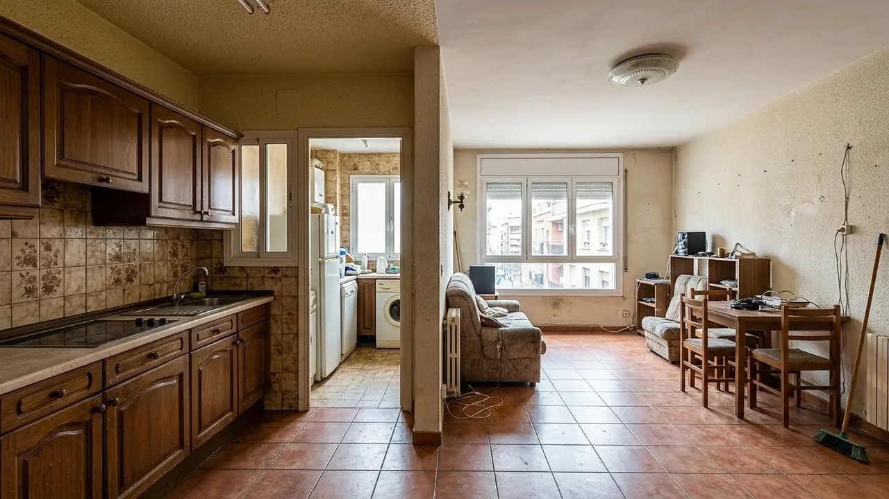

2025Cabanillas del Campo
Chalet en Cabanillas del Campo
Reforma integral · 148 m²
Acabados de alta gama, presupuesto cerrado y dirección técnica diaria para renovar tu piso o chalet en Guadalajara sin sorpresas.
Selecciona una estancia y verás el alcance técnico, el plazo real y un caso ejecutado.
Reorganizamos la distribución completa, renovamos instalaciones y resolvemos los acabados con un presupuesto cerrado. Incluye proyecto técnico, licencias municipales y dirección de obra diaria.
Cada fase se cierra con documentación firmada antes de pasar a la siguiente.
Vamos a tu casa con láser y cámara térmica. Medimos cada estancia, revisamos instalaciones existentes y detectamos posibles patologías antes de presupuestar nada.
«Una obra bien dirigida no se nota: simplemente no hay sorpresas. Yo reviso cada gremio, cada remate y cada material antes de que lo veas terminado.»
Reforma integral · 148 m²
Cocina abierta con isla porcelánica
Baño principal con ducha a ras

Antes Después
Después
Salón diáfano con tarima AC5
Calidades Porcelanosa, contratos cerrados y supervisión técnica diaria. Cada obra termina con boletines, planos finales y garantía legal de dos años.
Carpintería a medida y acabados
* Superficies y plazos corresponden al acta de obra firmada. Fotografías de proyectos entregados por Reformas Guadalajara.
Gremios propios y colaboradores fijos. Sin subcontratas rotativas ni trabajos a destajo.
Demoliciones selectivas, tabiquería de placa de yeso con aislamiento acústico, recrecidos de nivelación y enfoscados. Retiramos escombros con gestor autorizado y protección de zonas comunes.
Renovación completa de la red de agua fría y ACS en multicapa, sustitución de bajantes de PVC y pruebas de presión certificadas. Instalación de llaves de corte por estancia y colectores.
Cuadro eléctrico nuevo con diferenciales y magnetotérmicos, circuitos independientes por estancia, mecanismos de diseño y toma de tierra. Instalador autorizado con boletín oficial para legalizar.
Aerotermia aire-agua, suelo radiante por agua con colectores por estancia, termostatos zonificados y control desde el móvil. Cálculo de cargas térmicas y puesta en marcha certificada.
Precios de referencia con IVA incluido. Tu presupuesto final se cierra tras la visita técnica.
Entre 6 y 9 semanas para una reforma integral de hasta 90 m², contadas desde la firma del acta de replanteo. El plazo se fija por contrato con penalización económica por retraso imputable a la obra.
Sí. Entregamos un presupuesto desglosado por partidas y capítulos, con precio final y sin letra pequeña. Solo puede variar si tú pides un cambio de alcance, y en ese caso se aprueba por escrito antes de ejecutarlo.
Sí, tramitamos la licencia de obra y la comunicación previa ante el Ayuntamiento de Guadalajara y los municipios del corredor. También asumimos la dirección facultativa y la coordinación de seguridad y salud.
Te acompañamos a nuestro showroom de materiales en Guadalajara, donde puedes ver in situ porcelánicos, tarimas, carpintería y grifería. Trabajamos con Porcelanosa y marcas equivalentes con stock garantizado.
¿Tu caso no aparece? Escríbenos y lo revisamos sin coste en 24 horas laborables.
Cuéntanos qué quieres reformar y te llamamos en menos de 24 horas laborables para agendar la visita técnica sin coste.